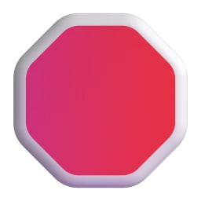
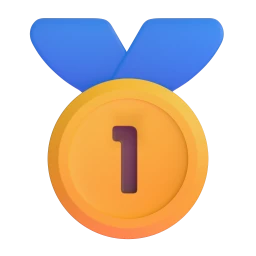
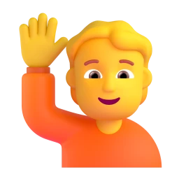

laugh
/læf/ · rir · aportuguesado: léf · aceitas: laugh
✓ sem alertas
am_michael
Don't make me laugh!
Não me faz rir! · lacuna: Don't make me ___!
We laugh a lot.
A gente ri muito. · lacuna: We ___ a lot.
Vozes: am_michael. Revisão provisória até existir a tela do admin.
I'm tired today.
Estou cansado hoje. · lacuna: —
I'm at home.
Estou em casa. · lacuna: —
I run in the morning.
Eu corro de manhã. · lacuna: I run in ___ morning.
Close the door, please.
Feche a porta, por favor. · lacuna: Close ___ door, please.
Do you want coffee?
Você quer café? · lacuna: Do ___ want coffee?
Thank you, you are kind.
Obrigado, você é gentil. · lacuna: Thank ___, you are kind.
You and me, together.
Você e eu, juntos. · lacuna: You ___ me, together.
I like rice and beans.
Eu gosto de arroz e feijão. · lacuna: I like rice ___ beans.
I like it here.
Eu gosto daqui. · lacuna: I like ___ here.
Where is it?
Onde está? · lacuna: Where is ___?
I want to go home.
Eu quero ir para casa. · lacuna: I want ___ go home.
I need to sleep.
Eu preciso dormir. · lacuna: I need ___ sleep.
I want a coffee.
Eu quero um café. · lacuna: I want ___ coffee.
She has a dog.
Ela tem um cachorro. · lacuna: She has ___ dog.
I have two cats.
Eu tenho dois gatos. · lacuna: I ___ two cats.
Do you have time?
Você tem tempo? · lacuna: Do you ___ time?
I have a lot of work.
Eu tenho muito trabalho. · lacuna: I have a lot ___ work.
A cup of coffee, please.
Uma xícara de café, por favor. · lacuna: A cup ___ coffee, please.
Sorry, I don't know.
Desculpa, eu não sei. · lacuna: Sorry, I ___'t know.
Do you work here?
Você trabalha aqui? · lacuna: ___ you work here?
Not now, I'm busy.
Agora não, estou ocupado. · lacuna: ___ now, I'm busy.
It is not my car.
Não é o meu carro. · lacuna: It is ___ my car.
Yes, that's right.
Sim, isso mesmo. · lacuna: Yes, ___'s right.
I like that song.
Eu gosto daquela música. · lacuna: I like ___ song.
They are my friends.
Eles são meus amigos. · lacuna: ___ are my friends.
They live here.
Eles moram aqui. · lacuna: ___ live here.
We can go now.
A gente pode ir agora. · lacuna: ___ can go now.
We are late.
Estamos atrasados. · lacuna: ___ are late.
My phone is in the car.
Meu celular está no carro. · lacuna: My phone is ___ the car.
I live in Brazil.
Eu moro no Brasil. · lacuna: I live ___ Brazil.
He is my brother.
Ele é meu irmão. · lacuna: ___ is my brother.
He works at night.
Ele trabalha à noite. · lacuna: ___ works at night.
I know her.
Eu conheço ela. · lacuna: I ___ her.
Do you know the answer?
Você sabe a resposta? · lacuna: Do you ___ the answer?
Can you get the phone?
Você pode pegar o celular? · lacuna: Can you ___ the phone?
I get home at six.
Eu chego em casa às seis. · lacuna: I ___ home at six.
Let's go!
Vamos! · lacuna: Let's ___!
We go to the beach.
A gente vai à praia. · lacuna: We ___ to the beach.
This food is so good.
Essa comida é tão boa. · lacuna: This food is ___ good.
I was tired, so I slept.
Eu estava cansado, então dormi. · lacuna: I was tired, ___ I slept.
I want this one.
Eu quero esse aqui. · lacuna: I want ___ one.
This is my house.
Esta é a minha casa. · lacuna: ___ is my house.
I want to, but I can't.
Eu quero, mas não posso. · lacuna: I want to, ___ I can't.
It's small but nice.
É pequeno, mas bonito. · lacuna: It's small ___ nice.
The keys are on the table.
As chaves estão na mesa. · lacuna: The keys are ___ the table.
Turn on the light.
Acenda a luz. · lacuna: Turn ___ the light.
I am hungry.
Estou com fome. · lacuna: ___ am hungry.
I love you.
Eu te amo. · lacuna: ___ love you.
This is for you.
Isto é para você. · lacuna: This is ___ you.
Thanks for the help.
Obrigado pela ajuda. · lacuna: Thanks ___ the help.
Yes, I think so.
Sim, acho que sim. · lacuna: Yes, I ___ so.
What do you think?
O que você acha? · lacuna: What do you ___?
I like music.
Eu gosto de música. · lacuna: I ___ music.
Do you like it?
Você gosta? · lacuna: Do you ___ it?
There is a cat here.
Tem um gato aqui. · lacuna: ___ is a cat here.
Put it over there.
Coloca ali. · lacuna: Put it over ___.
I will call you.
Eu vou te ligar. · lacuna: I ___ call you.
It will rain today.
Vai chover hoje. · lacuna: It ___ rain today.
What did you say?
O que você disse? · lacuna: What did you ___?
Say it again, please.
Fala de novo, por favor. · lacuna: ___ it again, please.
She is my sister.
Ela é minha irmã. · lacuna: ___ is my sister.
She works at home.
Ela trabalha em casa. · lacuna: ___ works at home.
What is your name?
Qual é o seu nome? · lacuna: ___ is your name?
What do you do?
O que você faz? · lacuna: ___ do you do?
Just a minute, please.
Só um minuto, por favor. · lacuna: ___ a minute, please.
I just want water.
Eu só quero água. · lacuna: I ___ want water.
She speaks English well.
Ela fala inglês bem. · lacuna: She speaks English ___.
Well, I don't know.
Bom, eu não sei. · lacuna: ___, I don't know.
I have one brother.
Eu tenho um irmão. · lacuna: I have ___ brother.
Just one, please.
Só um, por favor. · lacuna: Just ___, please.
Come with me.
Vem comigo. · lacuna: Come ___ me.
I live with my family.
Eu moro com a minha família. · lacuna: I live ___ my family.
We can go, if you want.
A gente pode ir, se você quiser. · lacuna: We can go, ___ you want.
Call me if you need.
Me liga se precisar. · lacuna: Call me ___ you need.
I'm at home now.
Estou em casa agora. · lacuna: I'm ___ home now.
See you at five.
Te vejo às cinco. · lacuna: See you ___ five.
I worked all day.
Eu trabalhei o dia todo. · lacuna: I worked ___ day.
That's all, thanks.
É só isso, obrigado. · lacuna: That's ___, thanks.
Let's talk about it.
Vamos conversar sobre isso. · lacuna: Let's talk ___ it.
What is it about?
É sobre o quê? · lacuna: What is it ___?
Coffee or water?
Café ou água? · lacuna: Coffee ___ water?
Yes or no?
Sim ou não? · lacuna: Yes ___ no?
I want one as well.
Eu quero um também. · lacuna: I want one ___ well.
She works as a teacher.
Ela trabalha como professora. · lacuna: She works ___ a teacher.
I would like a coffee.
Eu gostaria de um café. · lacuna: I ___ like a coffee.
Would you help me?
Você me ajudaria? · lacuna: ___ you help me?
See you then.
Te vejo então. · lacuna: See you ___.
I ate, then I slept.
Eu comi, depois dormi. · lacuna: I ate, ___ I slept.
I'm tired because I worked.
Estou cansado porque trabalhei. · lacuna: I'm tired ___ I worked.
Why? Because I want to.
Por quê? Porque eu quero. · lacuna: Why? ___ I want to.
You are right.
Você está certo. · lacuna: You are ___.
Turn right here.
Vire à direita aqui. · lacuna: Turn ___ here.
Can you help me?
Você pode me ajudar? · lacuna: ___ you help me?
I can swim.
Eu sei nadar. · lacuna: I ___ swim.
No, thank you.
Não, obrigado. · lacuna: ___, thank you.
There is no time.
Não tem tempo. · lacuna: There is ___ time.
I get up at six.
Eu acordo às seis. · lacuna: I get ___ at six.
Stand up, please.
Levante-se, por favor. · lacuna: Stand ___, please.
Sorry, what do you mean?
Desculpa, como assim? · lacuna: Sorry, what do you ___?
I mean it.
Estou falando sério. · lacuna: I ___ it.
Let's go out tonight.
Vamos sair hoje à noite. · lacuna: Let's go ___ tonight.
Get out of the car.
Saia do carro. · lacuna: Get ___ of the car.
I can see the sea.
Eu consigo ver o mar. · lacuna: I can ___ the sea.
See you later!
Até mais tarde! · lacuna: ___ you later!
What is this thing?
O que é essa coisa? · lacuna: What is this ___?
One more thing.
Mais uma coisa. · lacuna: One more ___.
Yes, please.
Sim, por favor. · lacuna: ___, please.
Say yes!
Diga sim! · lacuna: Say ___!
When is your birthday?
Quando é o seu aniversário? · lacuna: ___ is your birthday?
Call me when you arrive.
Me liga quando chegar. · lacuna: Call me ___ you arrive.
Really? I didn't know.
Sério? Eu não sabia. · lacuna: ___? I didn't know.
I really like it.
Eu gosto muito disso. · lacuna: I ___ like it.
I want water.
Eu quero água. · lacuna: I ___ water.
What do you want?
O que você quer? · lacuna: What do you ___?
Come here, please.
Vem aqui, por favor. · lacuna: ___ here, please.
Can you come tomorrow?
Você pode vir amanhã? · lacuna: Can you ___ tomorrow?
I need it now.
Eu preciso disso agora. · lacuna: I need it ___.
Where are you now?
Onde você está agora? · lacuna: Where are you ___?
I need some help.
Preciso de uma ajuda. · lacuna: I need ___ help.
Some people like it.
Algumas pessoas gostam. · lacuna: ___ people like it.
This is a good idea.
Essa é uma boa ideia. · lacuna: This is a ___ idea.
Have a good day!
Tenha um bom dia! · lacuna: Have a ___ day!
Hi! Where are you from?
Oi! De onde você é? · lacuna: Hi! Where are you ___?
I'm from Brazil.
Eu sou do Brasil. · lacuna: I'm ___ Brazil.
What time is it?
Que horas são? · lacuna: What ___ is it?
I don't have time now.
Eu não tenho tempo agora. · lacuna: I don't have ___ now.
Many people live here.
Muitas pessoas moram aqui. · lacuna: Many ___ live here.
I like these people.
Eu gosto dessas pessoas. · lacuna: I like these ___.
This is very good.
Isso está muito bom. · lacuna: This is ___ good.
I'm very tired.
Estou muito cansado. · lacuna: I'm ___ tired.
Yeah, I know.
É, eu sei. · lacuna: ___, I know.
Yeah, let's go!
Isso, vamos! · lacuna: ___, let's go!
I make coffee every day.
Eu faço café todo dia. · lacuna: I ___ coffee every day.
Don't make noise.
Não faça barulho. · lacuna: Don't ___ noise.
Look at this!
Olha isso! · lacuna: ___ at this!
You look tired.
Você parece cansado. · lacuna: You ___ tired.
I have two kids.
Eu tenho dois filhos. · lacuna: I have ___ kids.
Two coffees, please.
Dois cafés, por favor. · lacuna: ___ coffees, please.
Take the bus.
Pegue o ônibus. · lacuna: ___ the bus.
Can I take this?
Posso levar isso? · lacuna: Can I ___ this?
I live here.
Eu moro aqui. · lacuna: I live ___.
Here you go.
Aqui está. · lacuna: ___ you go.
Which one do you want?
Qual você quer? · lacuna: ___ one do you want?
Which is your car?
Qual é o seu carro? · lacuna: ___ is your car?
Excuse me, could you help me?
Com licença, você poderia me ajudar? · lacuna: Excuse me, ___ you help me?
I could not sleep.
Eu não consegui dormir. · lacuna: I ___ not sleep.
I go to work by bus.
Eu vou para o trabalho de ônibus. · lacuna: I go to ___ by bus.
I work from home today.
Hoje eu trabalho de casa. · lacuna: I ___ from home today.
I want more coffee.
Eu quero mais café. · lacuna: I want ___ coffee.
One more time.
Mais uma vez. · lacuna: One ___ time.
Who is she?
Quem é ela? · lacuna: ___ is she?
Who wants coffee?
Quem quer café? · lacuna: ___ wants coffee?
I want the other one.
Eu quero o outro. · lacuna: I want the ___ one.
Other people think so.
Outras pessoas acham isso. · lacuna: ___ people think so.
Don't make me laugh!
Não me faz rir! · lacuna: Don't make me ___!
We laugh a lot.
A gente ri muito. · lacuna: We ___ a lot.
Where is the bathroom?
Onde fica o banheiro? · lacuna: ___ is the bathroom?
Where do you live?
Onde você mora? · lacuna: ___ do you live?
Can I use your phone?
Posso usar seu celular? · lacuna: Can I ___ your phone?
I use it every day.
Eu uso isso todo dia. · lacuna: I ___ it every day.
I want to eat something.
Quero comer alguma coisa. · lacuna: I want to eat ___.
Something is wrong.
Tem algo errado. · lacuna: ___ is wrong.
Hi! How are you?
Oi! Como você está? · lacuna: Hi! ___ are you?
How do you say this?
Como se diz isso? · lacuna: ___ do you say this?
Come back soon!
Volte logo! · lacuna: Come ___ soon!
I'll be back.
Eu já volto. · lacuna: I'll be ___.

Happy new year!
Feliz ano novo! · lacuna: Happy new ___!
I lived there one year.
Eu morei lá um ano. · lacuna: I lived there one ___.
I go home by bus.
Eu vou para casa de ônibus. · lacuna: I go home ___ bus.
Is it by the door?
Fica perto da porta? · lacuna: Is it ___ the door?
Do you have any money?
Você tem algum dinheiro? · lacuna: Do you have ___ money?
I don't have any time.
Eu não tenho tempo nenhum. · lacuna: I don't have ___ time.
Thanks a lot!
Muito obrigado! · lacuna: Thanks a ___!
I like it a lot.
Eu gosto muito. · lacuna: I like it a ___.
Come this way, please.
Venha por aqui, por favor. · lacuna: Come this ___, please.
No way!
De jeito nenhum! · lacuna: No ___!
Put it on the table.
Coloque na mesa. · lacuna: ___ it on the table.
Where did you put my keys?
Onde você colocou minhas chaves? · lacuna: Where did you ___ my keys?
Please, sit down.
Sente-se, por favor. · lacuna: Please, sit ___.
Calm down.
Calma. · lacuna: Calm ___.
Give me a minute.
Me dá um minuto. · lacuna: ___ me a minute.
Can you give me that?
Você pode me dar isso? · lacuna: Can you ___ me that?
It's sort of hard.
É meio difícil. · lacuna: It's ___ of hard.
Yeah, sort of.
É, mais ou menos. · lacuna: Yeah, ___ of.
I have three dogs.
Eu tenho três cachorros. · lacuna: I have ___ dogs.
It's three o'clock.
São três horas. · lacuna: It's ___ o'clock.
How much is it?
Quanto custa? · lacuna: How ___ is it?
Thank you so much!
Muito obrigado! · lacuna: Thank you so ___!
Actually, I'm fine.
Na verdade, estou bem. · lacuna: ___, I'm fine.
I actually like it.
Na verdade, eu gosto. · lacuna: I ___ like it.
I need help.
Eu preciso de ajuda. · lacuna: I ___ help.
Do you need anything?
Você precisa de alguma coisa? · lacuna: Do you ___ anything?

Can we talk?
Podemos conversar? · lacuna: Can we ___?
Talk to me.
Fala comigo. · lacuna: ___ to me.
I'm kind of tired.
Estou meio cansado. · lacuna: I'm ___ of tired.
She is very kind.
Ela é muito gentil. · lacuna: She is very ___.
Tell me the truth.
Me conta a verdade. · lacuna: ___ me the truth.
Can you tell him?
Você pode avisar ele? · lacuna: Can you ___ him?
I only have five dollars.
Eu só tenho cinco dólares. · lacuna: I ___ have five dollars.
Only you.
Só você. · lacuna: ___ you.
Can I have some water?
Posso tomar um pouco de água? · lacuna: Can I have some ___?
The water is cold.
A água está gelada. · lacuna: The ___ is cold.
I have a meeting at nine.
Eu tenho uma reunião às nove. · lacuna: I have a ___ at nine.
The meeting is in the morning.
A reunião é de manhã. · lacuna: The ___ is in the morning.

Where is my phone?
Cadê meu celular? · lacuna: Where is my ___?
My phone is on the table.
Meu celular está na mesa. · lacuna: My ___ is on the table.

I want a coffee, please.
Eu quero um café, por favor. · lacuna: I want a ___, please.
This coffee is very good.
Este café está muito bom. · lacuna: This ___ is very good.

My house is near here.
Minha casa é perto daqui. · lacuna: My ___ is near here.
Come to my house today.
Venha na minha casa hoje. · lacuna: Come to my ___ today.

My car is very old.
Meu carro é muito velho. · lacuna: My ___ is very old.
We can go by car.
Podemos ir de carro. · lacuna: We can go by ___.

I don't have any money.
Eu não tenho dinheiro nenhum. · lacuna: I don't have any ___.
Do you need money?
Você precisa de dinheiro? · lacuna: Do you need ___?
She is my best friend.
Ela é minha melhor amiga. · lacuna: She is my best ___.
My friend lives here.
Meu amigo mora aqui. · lacuna: My ___ lives here.
Thank you for the coffee.
Obrigado pelo café. · lacuna: ___ for the coffee.
Thank you, see you later.
Obrigado, até mais. · lacuna: ___, see you later.
Good morning! How are you?
Bom dia! Como você está? · lacuna: Good ___! How are you?
I run every morning.
Eu corro toda manhã. · lacuna: I run every ___.
My family is very big.
Minha família é muito grande. · lacuna: My ___ is very big.
I love my family.
Eu amo minha família. · lacuna: I love my ___.

The food here is good.
A comida aqui é boa. · lacuna: The ___ here is good.
Do you like Brazilian food?
Você gosta de comida brasileira? · lacuna: Do you like Brazilian ___?

This book is very good.
Este livro é muito bom. · lacuna: This ___ is very good.
I read a book every month.
Eu leio um livro por mês. · lacuna: I read a ___ every month.

My dog likes water.
Meu cachorro gosta de água. · lacuna: My ___ likes water.
Your dog is very happy.
Seu cachorro está muito feliz. · lacuna: Your ___ is very happy.

Please close the door.
Por favor, feche a porta. · lacuna: Please close the ___.
Someone is at the door.
Tem alguém na porta. · lacuna: Someone is at the ___.
I am very happy today.
Eu estou muito feliz hoje. · lacuna: I am very ___ today.
Are you happy here?
Você está feliz aqui? · lacuna: Are you ___ here?

Okay, let's go.
Ok, vamos. · lacuna: ___, let's go.
Are you okay?
Você está bem? · lacuna: Are you ___?

My dad is at work.
Meu pai está no trabalho. · lacuna: My ___ is at work.
Dad, can you help me?
Pai, você pode me ajudar? · lacuna: ___, can you help me?

My mom likes coffee.
Minha mãe gosta de café. · lacuna: My ___ likes coffee.
Mom, I am home!
Mãe, cheguei em casa! · lacuna: ___, I am home!
The baby is very small.
O bebê é bem pequeno. · lacuna: The ___ is very small.
We have a baby now.
Agora a gente tem um bebê. · lacuna: We have a ___ now.
I have a little dog.
Eu tenho um cachorrinho. · lacuna: I have a ___ dog.
Wait a little, please.
Espera um pouco, por favor. · lacuna: Wait a ___, please.

Stop, please!
Pare, por favor! · lacuna: ___, please!
The bus stops here.
O ônibus para aqui. · lacuna: The bus ___ here.

This is my first day.
Este é o meu primeiro dia. · lacuna: This is my ___ day.
You go first.
Vai você primeiro. · lacuna: You go ___.

Sorry, I'm late.
Desculpa, estou atrasado. · lacuna: ___, I'm late.
I am so sorry.
Sinto muito. · lacuna: I am so ___.
I love pizza.
Eu amo pizza. · lacuna: I ___ pizza.
We love this song.
A gente ama essa música. · lacuna: We ___ this song.

My kids are at school.
Meus filhos estão na escola. · lacuna: My ___ are at school.
The kids like music.
As crianças gostam de música. · lacuna: The ___ like music.

This coffee is bad.
Esse café está ruim. · lacuna: This coffee is ___.
It is not so bad.
Não é tão ruim. · lacuna: It is not so ___.

Your car is so cool!
Seu carro é muito legal! · lacuna: Your car is so ___!
Cool, see you later.
Legal, até mais. · lacuna: ___, see you later.

This phone is old.
Esse celular é velho. · lacuna: This phone is ___.
How old are you?
Quantos anos você tem? · lacuna: How ___ are you?
I still love you.
Eu ainda te amo. · lacuna: I ___ love you.
Are you still here?
Você ainda está aqui? · lacuna: Are you ___ here?
I always drink coffee.
Eu sempre tomo café. · lacuna: I ___ drink coffee.
She is always late.
Ela está sempre atrasada. · lacuna: She is ___ late.
There is nothing here.
Não tem nada aqui. · lacuna: There is ___ here.
I want nothing, thanks.
Não quero nada, obrigado. · lacuna: I want ___, thanks.

Nice to meet you.
Prazer em te conhecer. · lacuna: ___ to meet you.
What a nice house!
Que casa bonita! · lacuna: What a ___ house!

My husband is a teacher.
Meu marido é professor. · lacuna: My ___ is a teacher.
Her husband works here.
O marido dela trabalha aqui. · lacuna: Her ___ works here.

The kids go to school.
As crianças vão para a escola. · lacuna: The kids go to ___.
Is your school near?
Sua escola é perto? · lacuna: Is your ___ near?

Let's go together.
Vamos juntos. · lacuna: Let's go ___.
We live together.
A gente mora junto. · lacuna: We live ___.
It was, you know, fun.
Foi, sabe, divertido. · lacuna: It was, ___, fun.
You know, I like it.
Sabe, eu gosto disso. · lacuna: ___, I like it.
Yes, I know.
Sim, eu sei. · lacuna: Yes, ___.
I know, I know.
Eu sei, eu sei. · lacuna: ___, I know.
Come on, let's go!
Vamos, bora! · lacuna: ___, let's go!
Oh, come on!
Ah, qual é! · lacuna: Oh, ___!

Are you guys okay?
Vocês estão bem? · lacuna: Are ___ okay?
Thank you, you guys.
Obrigado, pessoal. · lacuna: Thank you, ___.
Okay, I got it.
Ok, entendi. · lacuna: Okay, ___.
Don't worry, I got it.
Relaxa, deixa comigo. · lacuna: Don't worry, ___.

Excuse me, where is the bus?
Com licença, onde fica o ônibus? · lacuna: ___, where is the bus?
Excuse me, is this yours?
Com licença, isso é seu? · lacuna: ___, is this yours?
Are you kidding? That is so good!
Tá brincando? Isso é muito bom! · lacuna: ___? That is so good!
Are you kidding me?
Você tá de brincadeira comigo? · lacuna: ___ me?
Don't worry, I'm here.
Relaxa, estou aqui. · lacuna: ___, I'm here.
Don't worry about it.
Não se preocupe com isso. · lacuna: ___ about it.
I'm gonna sleep now.
Eu vou dormir agora. · lacuna: ___ sleep now.
I'm gonna call you.
Eu vou te ligar. · lacuna: ___ call you.
I'm not sure, sorry.
Não tenho certeza, desculpa. · lacuna: ___, sorry.
I'm not sure it is here.
Não tenho certeza se está aqui. · lacuna: ___ it is here.